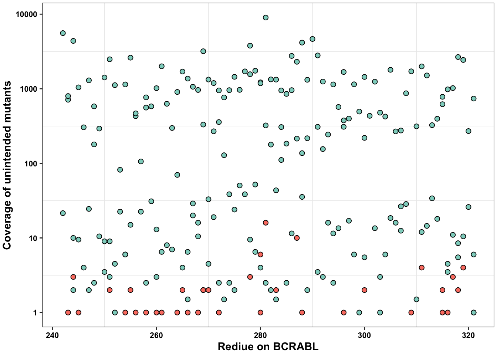
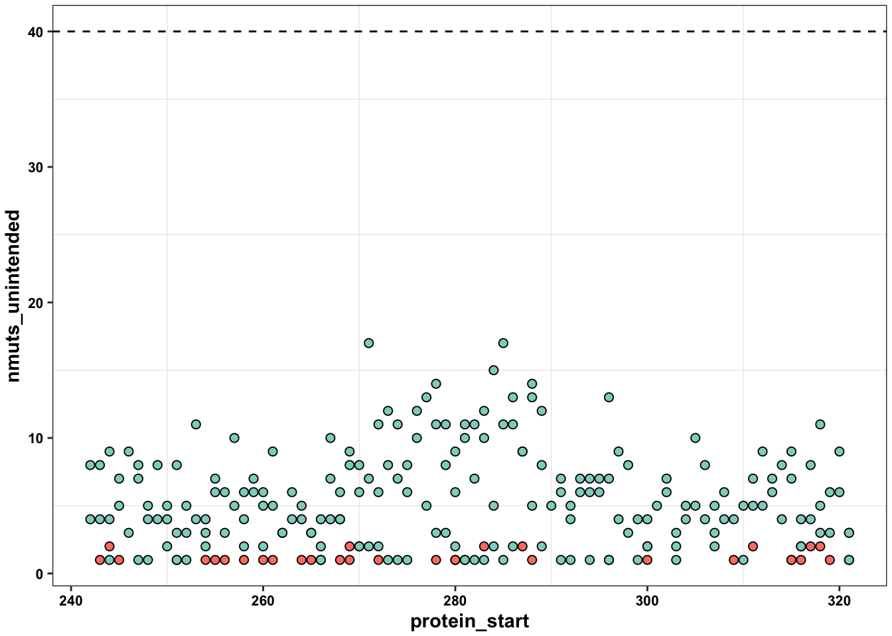
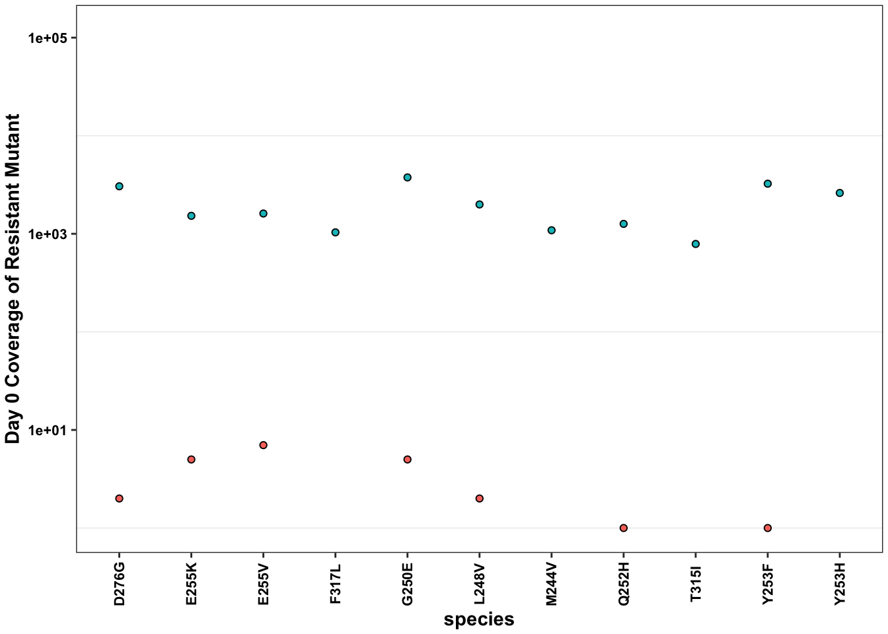
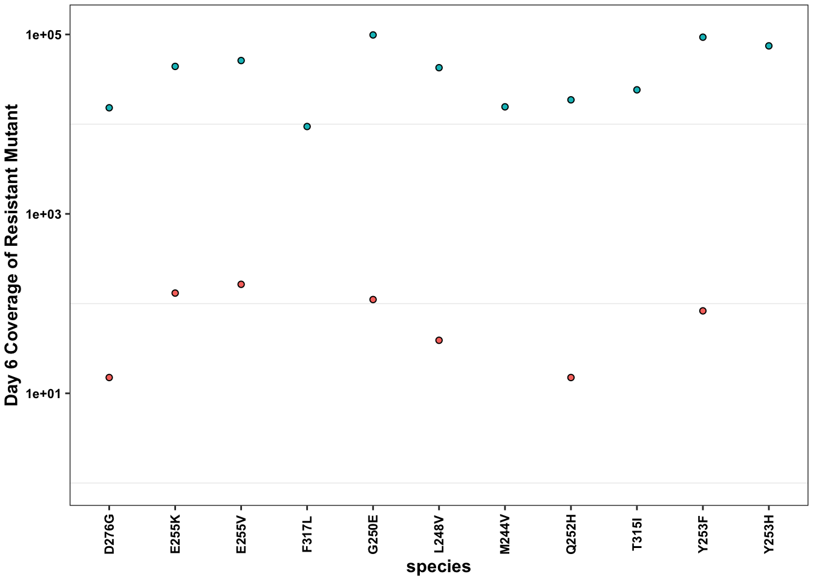

ErrorRates_Tileseq_NGS_Duplex_SSCS
Haider Inam
2024-12-23
Last updated: 2025-07-01
Checks: 6 1
Knit directory: abl_dms/
This reproducible R Markdown analysis was created with workflowr (version 1.6.2). The Checks tab describes the reproducibility checks that were applied when the results were created. The Past versions tab lists the development history.
The R Markdown file has unstaged changes. To know which version of
the R Markdown file created these results, you’ll want to first commit
it to the Git repo. If you’re still working on the analysis, you can
ignore this warning. When you’re finished, you can run
wflow_publish to commit the R Markdown file and build the
HTML.
Great job! The global environment was empty. Objects defined in the global environment can affect the analysis in your R Markdown file in unknown ways. For reproduciblity it’s best to always run the code in an empty environment.
The command set.seed(20250621) was run prior to running
the code in the R Markdown file. Setting a seed ensures that any results
that rely on randomness, e.g. subsampling or permutations, are
reproducible.
Great job! Recording the operating system, R version, and package versions is critical for reproducibility.
Nice! There were no cached chunks for this analysis, so you can be confident that you successfully produced the results during this run.
Great job! Using relative paths to the files within your workflowr project makes it easier to run your code on other machines.
Great! You are using Git for version control. Tracking code development and connecting the code version to the results is critical for reproducibility.
The results in this page were generated with repository version 65f371d. See the Past versions tab to see a history of the changes made to the R Markdown and HTML files.
Note that you need to be careful to ensure that all relevant files for
the analysis have been committed to Git prior to generating the results
(you can use wflow_publish or
wflow_git_commit). workflowr only checks the R Markdown
file, but you know if there are other scripts or data files that it
depends on. Below is the status of the Git repository when the results
were generated:
Ignored files:
Ignored: .DS_Store
Ignored: .Rproj.user/
Ignored: analysis/.DS_Store
Ignored: analysis/.Rhistory
Ignored: code/.DS_Store
Ignored: data/.DS_Store
Ignored: data/ABL1AppOutput/.DS_Store
Ignored: data/Consensus_Data/.DS_Store
Ignored: data/Consensus_Data/novogene_lane18b_rerun/.DS_Store
Ignored: data/Consensus_Data/novogene_lane18b_rerun/sample10/.DS_Store
Ignored: data/Consensus_Data/novogene_lane18b_rerun/sample10/duplex/.DS_Store
Ignored: data/Consensus_Data/novogene_lane18b_rerun/sample10/ngs/.DS_Store
Ignored: data/Consensus_Data/novogene_lane18b_rerun/sample10/sscs/.DS_Store
Ignored: data/Consensus_Data/novogene_lane18b_rerun/sample10/tileseq/.DS_Store
Ignored: data/Consensus_Data/novogene_lane18b_rerun/sample8/.DS_Store
Ignored: data/Consensus_Data/novogene_lane18b_rerun/sample8/duplex/.DS_Store
Ignored: data/Consensus_Data/novogene_lane18b_rerun/sample8/duplex/variant_caller_outputs/.DS_Store
Ignored: data/Consensus_Data/novogene_lane18b_rerun/sample8/ngs/.DS_Store
Ignored: data/Consensus_Data/novogene_lane18b_rerun/sample8/sscs/.DS_Store
Ignored: data/Consensus_Data/novogene_lane18b_rerun/sample8/tileseq/.DS_Store
Ignored: data/Consensus_Data/novogene_lane18b_rerun/sample9/.DS_Store
Ignored: data/Consensus_Data/novogene_lane18b_rerun/sample9/duplex/.DS_Store
Ignored: data/Consensus_Data/novogene_lane18b_rerun/sample9/ngs/.DS_Store
Ignored: data/Consensus_Data/novogene_lane18b_rerun/sample9/sscs/.DS_Store
Ignored: data/Consensus_Data/novogene_lane18b_rerun/sample9/tileseq/.DS_Store
Ignored: data/Refs/.DS_Store
Ignored: data/Twinstrand/.DS_Store
Ignored: output/.DS_Store
Ignored: output/ABLEnrichmentScreens/.DS_Store
Ignored: output/ABLEnrichmentScreens/ABL_Region1_lane18b/.DS_Store
Ignored: output/Enrichmentsimulations/.DS_Store
Ignored: output/spikeins_figures/.DS_Store
Unstaged changes:
Modified: analysis/ErrorRates_Tileseq_NGS_Duplex_SSCS.Rmd
Modified: analysis/Homepage_errorrates.Rmd
Modified: analysis/spikeins_e255k_gfp.Rmd
Note that any generated files, e.g. HTML, png, CSS, etc., are not included in this status report because it is ok for generated content to have uncommitted changes.
These are the previous versions of the repository in which changes were
made to the R Markdown
(analysis/ErrorRates_Tileseq_NGS_Duplex_SSCS.Rmd) and HTML
(docs/ErrorRates_Tileseq_NGS_Duplex_SSCS.html) files. If
you’ve configured a remote Git repository (see
?wflow_git_remote), click on the hyperlinks in the table
below to view the files as they were in that past version.
| File | Version | Author | Date | Message |
|---|---|---|---|---|
| Rmd | 65f371d | haiderinam | 2025-06-29 | Added tileseq vs ngs analyses |
| html | 65f371d | haiderinam | 2025-06-29 | Added tileseq vs ngs analyses |
source("code/resmuts_adder.R")
#Cleanup code for plotting
cleanup=theme_bw() +
theme(plot.title = element_text(hjust=.5),
panel.grid.major = element_blank(),
panel.grid.major.y = element_blank(),
panel.background = element_blank(),
# axis.line = element_line(color = "black"),
axis.text = element_text(face="bold",color="black",size="11"),
text=element_text(size=11,face="bold"),
axis.title=element_text(face="bold",size="11"))Doing an NGS, SSCS, DCS, and Tileseq comparison The following data was taken from lane 18b sample 8 vs 10 duplex and tileseq data. This is region 1 (residues 242-322) of the ABL kinase sequenced with four different sequencing technologies.
Plots for figures in manuscript
# This sequencing data was generated using the scripts labeled ErrorRates_dataparser_region1.
data=read.csv("output/ABLEnrichmentScreens/ABL_Region1_lane18b/baf3_Imat_high_rep1vsrep2_duplex/screen_comparison_baf3_Imat_high_rep1vsrep2_duplex.csv",header = T,stringsAsFactors = F)[-1]
data$seqtech="duplex"
data_duplex=data
data=read.csv("output/ABLEnrichmentScreens/ABL_Region1_lane18b/baf3_Imat_high_rep1vsrep2_ngs/screen_comparison_baf3_Imat_high_rep1vsrep2_ngs.csv",header = T,stringsAsFactors = F)[-1]
data$seqtech="ngs"
data_ngs=data
data=read.csv("output/ABLEnrichmentScreens/ABL_Region1_lane18b/baf3_Imat_high_rep1vsrep2_sscs/screen_comparison_baf3_Imat_high_rep1vsrep2_sscs.csv",header = T,stringsAsFactors = F)[-1]
data$seqtech="sscs"
data_sscs=data
data=read.csv("output/ABLEnrichmentScreens/ABL_Region1_lane18b/baf3_Imat_high_rep1vsrep2_tileseq/screen_comparison_baf3_Imat_high_rep1vsrep2_tileseq.csv",header = T,stringsAsFactors = F)[-1]
data$seqtech="tileseq"
data_tileseq=data
data=rbind(data_duplex,data_ngs,data_sscs,data_tileseq)
data_sum=data%>%
filter(protein_start%in%c(242:322),is_intended%in%1)%>%
group_by(seqtech)%>%
summarize(mean_depth=mean(depth_screen1_before),
num=n())
data=data%>%rowwise%>%mutate(n_nuc=nchar(alt))Signal to noise ratios
Plotting unintended vs intended mutant distributions across sequencing technologies.
ggplot(data%>%filter(ct_screen1_before>=5,seqtech%in%"ngs",n_nuc%in%1),aes(x=ct_screen1_before,fill=factor(is_intended,levels=c(1,0))))+geom_density(alpha=0.7)+scale_x_continuous("Number of times a variant was seen",trans="log10")+cleanup+scale_fill_manual(values = c("blue","red"))+scale_y_continuous("Density")+theme(legend.position = "none")
| Version | Author | Date |
|---|---|---|
| 65f371d | haiderinam | 2025-06-29 |
# ggsave("output/errorrates_figures/plot6a_abl_ngs_untreated.pdf",width=3.5,height=2.5,units="in",useDingbats=F)
ggplot(data%>%filter(ct_screen1_before>=5,seqtech%in%"tileseq",n_nuc%in%1),aes(x=ct_screen1_before,fill=factor(is_intended,levels=c(1,0))))+geom_density(alpha=0.7)+scale_x_continuous("Number of times a variant was seen",trans="log10")+cleanup+scale_fill_manual(values = c("blue","red"))+scale_y_continuous("Density")+theme(legend.position = "none")
| Version | Author | Date |
|---|---|---|
| 65f371d | haiderinam | 2025-06-29 |
# ggsave("output/errorrates_figures/plot6b_abl_tileseq_untreated.pdf",width=3.5,height=2.5,units="in",useDingbats=F)
ggplot(data%>%filter(seqtech%in%"duplex",n_nuc%in%1),aes(x=ct_screen1_before,fill=factor(is_intended,levels=c(1,0))))+geom_density(alpha=0.7)+scale_x_continuous("Number of times a variant was seen",trans="log10")+cleanup+scale_fill_manual(values = c("blue","red"))+scale_y_continuous("Density")+theme(legend.position = "none")
| Version | Author | Date |
|---|---|---|
| 65f371d | haiderinam | 2025-06-29 |
# ggsave("output/errorrates_figures/plot6c_abl_duplex_untreated.pdf",width=3.5,height=2.5,units="in",useDingbats=F)Unintended mutants coverage
library(tidyr)
data_snr=data%>%filter(protein_start%in%c(242:322))%>%group_by(seqtech,is_intended,protein_start,n_nuc_min)%>%summarize(nmuts=n(),coverage_mean=mean(ct_screen1_before),coverage_sum=sum(ct_screen1_before),depth_mean=mean(depth_screen1_before))`summarise()` has grouped output by 'seqtech', 'is_intended', 'protein_start'. You can override using the `.groups` argument.data_snr_cast <- data_snr %>%
pivot_wider(
names_from = is_intended,
values_from = c(nmuts,coverage_mean,coverage_sum,depth_mean),
names_glue = "{.value}_{ifelse(is_intended == 1, 'intended', 'unintended')}"
)
# data_snr_cast=data_snr_cast%>%mutate(snr=coverage_mean_intended/coverage_mean_unintended)
data_snr_cast=data_snr_cast%>%mutate(snr=coverage_sum_intended/coverage_sum_unintended)
# Demonstrating noise:
ggplot(data_snr_cast%>%filter(seqtech%in%c("duplex","tileseq")),aes(x=protein_start,y=coverage_sum_unintended))+
geom_point(color="black",size=2,shape=21,aes(fill=seqtech))+
# facet_wrap(~seqtech)+
scale_fill_manual(values = c("#FB8072","#8ED3C7"))+
scale_y_continuous("Coverage of unintended mutants",trans = "log10")+
scale_x_continuous("Rediue on BCRABL")+
cleanup+
theme(legend.position = "none",
legend.title = element_text(size=8),
legend.text = element_text(size=8),
axis.text.x=element_text(color="black",size=8),
# axis.title.x=element_blank(),
# axis.title.y=element_blank(),
axis.text.y=element_text(color="black",size=8),
plot.margin=grid::unit(c(1,1,1,1), "mm"))Warning: Removed 240 rows containing missing values (geom_point).
| Version | Author | Date |
|---|---|---|
| 65f371d | haiderinam | 2025-06-29 |
# ggsave("output/errorrates_figures/plot1.pdf",width=2.5,height=2.5,units = "in",useDingbats=F)
ggplot(data_snr_cast%>%filter(seqtech%in%c("duplex","tileseq")),aes(x=protein_start,y=nmuts_unintended,fill=seqtech))+
geom_point(color="black",size=2,shape=21,aes(fill=seqtech))+
scale_fill_manual(values = c("#FB8072","#8ED3C7"))+
geom_hline(yintercept = 40,linetype="dashed")+
cleanup+
theme(legend.position = "none",
legend.title = element_text(size=8),
legend.text = element_text(size=8),
axis.text.x=element_text(color="black",size=8),
# axis.title.x=element_blank(),
# axis.title.y=element_blank(),
axis.text.y=element_text(color="black",size=8),
plot.margin=grid::unit(c(1,1,1,1), "mm"))Warning: Removed 240 rows containing missing values (geom_point).
| Version | Author | Date |
|---|---|---|
| 65f371d | haiderinam | 2025-06-29 |
# ggsave("output/errorrates_figures/plot2.pdf",width=2.5,height=2.5,units = "in",useDingbats=F)Coverage of intended resistant mutants
# Demonstrating coverage:
ggplot(data%>%filter(resmuts%in%T,is_intended%in%1,seqtech%in%c("duplex","tileseq")),aes(x=species,y=ct_screen1_before,fill=seqtech))+
geom_point(color="black",shape=21)+
geom_line()+
scale_y_continuous("Day 0 Coverage of Resistant Mutant",trans="log10",limits=c(1,1.2e5))+
cleanup+
theme(axis.text.x=element_text(color="black",size=8,angle=90,hjust=.5,vjust=.5),
legend.position = "none",
legend.title = element_text(size=8),
legend.text = element_text(size=8),
# axis.title.x=element_blank(),
# axis.title.y=element_blank(),
axis.text.y=element_text(color="black",size=8),
plot.margin=grid::unit(c(1,1,1,1), "mm"))geom_path: Each group consists of only one observation. Do you need to adjust
the group aesthetic?
| Version | Author | Date |
|---|---|---|
| 65f371d | haiderinam | 2025-06-29 |
# ggsave("output/errorrates_figures/plot3.pdf",width=2.5,height=2.5,units = "in",useDingbats=F)
ggplot(data%>%filter(resmuts%in%T,is_intended%in%1,seqtech%in%c("duplex","tileseq")),aes(x=species,y=ct_screen2_after,fill=seqtech))+
geom_point(color="black",shape=21)+
geom_line()+
scale_y_continuous("Day 6 Coverage of Resistant Mutant",trans="log10",limits=c(1,1.2e5))+
cleanup+
theme(axis.text.x=element_text(color="black",size=8,angle=90,hjust=.5,vjust=.5),
legend.position = "none",
legend.title = element_text(size=8),
legend.text = element_text(size=8),
# axis.title.x=element_blank(),
# axis.title.y=element_blank(),
axis.text.y=element_text(color="black",size=8),
plot.margin=grid::unit(c(1,1,1,1), "mm"))geom_path: Each group consists of only one observation. Do you need to adjust
the group aesthetic?
| Version | Author | Date |
|---|---|---|
| 65f371d | haiderinam | 2025-06-29 |
# ggsave("output/errorrates_figures/plot3b.pdf",width=2.5,height=2.5,units = "in",useDingbats=F)CDF across sequencing technologies
ggplot(data%>%filter(is_intended%in%1,seqtech%in%c("duplex","tileseq")),aes(x=ct_screen1_before,color=seqtech))+
stat_ecdf()+
scale_x_continuous("Intended mutant coverage",trans="log10")+
scale_y_continuous("CDF")+
scale_color_manual(values=c("#FB8072","#8ED3C7"))+
cleanup+
theme(axis.text.x=element_text(color="black",size=8,angle=90,hjust=.5,vjust=.5),
legend.position = "none",
legend.title = element_text(size=8),
legend.text = element_text(size=8),
# axis.title.x=element_blank(),
# axis.title.y=element_blank(),
axis.text.y=element_text(color="black",size=8),
plot.margin=grid::unit(c(1,1,1,1), "mm"))
| Version | Author | Date |
|---|---|---|
| 65f371d | haiderinam | 2025-06-29 |
# ggsave("output/errorrates_figures/plot4.pdf",width=2.5,height=2.5,units = "in",useDingbats=F)Unintended mutants coverage more details
The big caveat when comparing the depths of NGS vs Tileseq data is that the TileSeq data was given approximately 10 times more sequencing reads. Therefore, at face value, it looks like TileSeq detects as many errors as NGS, even though that is not the case.
ggplot(data_snr_cast%>%filter(seqtech%in%c("duplex","tileseq","ngs")),aes(x=protein_start,y=coverage_sum_unintended))+
geom_point(color="black",size=2,shape=21,aes(fill=seqtech))+
# facet_wrap(~seqtech)+
scale_fill_manual(values = c("#FB8072","#3287BD","#8ED3C7"))+
scale_y_continuous("Coverage of unintended mutants",trans = "log10")+
scale_x_continuous("Rediue on BCRABL")+
cleanup+
theme(legend.position = "none",
legend.title = element_text(size=8),
legend.text = element_text(size=8),
axis.text.x=element_text(color="black",size=8),
# axis.title.x=element_blank(),
# axis.title.y=element_blank(),
axis.text.y=element_text(color="black",size=8),
plot.margin=grid::unit(c(1,1,1,1), "mm"))Warning: Removed 277 rows containing missing values (geom_point).
| Version | Author | Date |
|---|---|---|
| 65f371d | haiderinam | 2025-06-29 |
ggplot(data_snr_cast%>%filter(n_nuc_min%in%1,seqtech%in%c("duplex","tileseq","ngs")),aes(x=protein_start,y=nmuts_unintended,fill=seqtech))+
geom_point(color="black",size=2,shape=21,aes(fill=seqtech))+
geom_line(aes(color=seqtech))+
scale_fill_manual(values = c("#FB8072","#3287BD","#8ED3C7"))+
scale_color_manual(values = c("#FB8072","#3287BD","#8ED3C7"))+
# geom_hline(yintercept = 40,linetype="dashed")+
cleanup+
theme(legend.position = "none",
legend.title = element_text(size=8),
legend.text = element_text(size=8),
axis.text.x=element_text(color="black",size=8),
# axis.title.x=element_blank(),
# axis.title.y=element_blank(),
axis.text.y=element_text(color="black",size=8),
plot.margin=grid::unit(c(1,1,1,1), "mm"))Warning: Removed 52 rows containing missing values (geom_point).Warning: Removed 1 row(s) containing missing values (geom_path).
| Version | Author | Date |
|---|---|---|
| 65f371d | haiderinam | 2025-06-29 |
Archive
Prior SSCS vs Tileseq analyses.
ggplot(data_snr_cast,aes(x=protein_start,y=snr))+geom_point()+facet_wrap(~seqtech)+scale_y_continuous(limits=c(0,60))
ggplot(data_snr_cast,aes(x=snr,fill=seqtech))+geom_density(alpha=0.6)+scale_x_continuous("Signal to noise",trans="log10")
ggplot(data_snr_cast,aes(x=protein_start,y=nmuts_intended))+geom_point()+facet_wrap(~seqtech)
ggplot(data_snr_cast,aes(x=protein_start,y=nmuts_unintended))+geom_point()+facet_wrap(~seqtech)
ggplot(data_snr_cast,aes(x=protein_start,y=coverage_mean_unintended))+geom_point()+facet_wrap(~seqtech)+scale_y_continuous(limits=c(0,200))
ggplot(data_snr_cast,aes(x=protein_start,y=coverage_sum_unintended))+geom_point()+facet_wrap(~seqtech)+scale_y_continuous(trans = "log10")
ggplot(data%>%filter(resmuts%in%T,is_intended%in%1),aes(x=species,y=ct_screen1_before,fill=seqtech))+geom_point(color="black",shape=21)+geom_line()+scale_y_continuous("Day 0 Coverage of Resistant Mutant",trans="log10")+cleanup+theme(axis.text.x=element_text(angle=90,hjust=.5,vjust=.5))
ggplot(data%>%filter(resmuts%in%T,is_intended%in%1),aes(x=species,y=ct_screen1_after,fill=seqtech))+geom_point(color="black",shape=21)+geom_line()+scale_y_continuous("Day 6 Coverage of Resistant Mutant",trans="log10")+cleanup+theme(axis.text.x=element_text(angle=90,hjust=.5,vjust=.5))
ggplot(data%>%filter(is_intended%in%1),aes(x=ct_screen1_before,color=seqtech))+stat_ecdf()+scale_x_continuous("Intended mutant coverage",trans="log10")+scale_y_continuous("CDF")
ggplot(data,aes(x=ct_screen1_before,fill=seqtech))+geom_histogram()+facet_wrap(seqtech~is_intended)+scale_x_continuous(trans="log10")
ggplot(data%>%filter(is_intended%in%1),aes(x=ct_screen1_after,fill=seqtech))+geom_histogram()+facet_wrap(~seqtech)+scale_x_continuous(trans="log10")This is the analysis to allow benchmarking of ABL data to tileseq data
This google doc has notes on how to interpret the google doc
# rm(list=ls())
data=read.csv("output/ABLEnrichmentScreens/ABL_Region1234_Tileseq/data/TileSeqandSSCS_full_kinase_alldoses_with_lfc_corrected_netgrowths_12192024.csv",header = T,stringsAsFactors = F)
# a=data%>%filter(is_intended%in%0,seqtech%in%"sscs",dose%in%"300nM",protein_start%in%c(242:512))
ggplot(data,aes(x=factor(protein_start),y=ct_screen1_before,fill=factor(is_intended)))+geom_boxplot()+facet_wrap(~seqtech,nrow = 2)+cleanup+scale_y_continuous(trans="log10")+theme(axis.text.x=element_text(angle=90, hjust=1))
data_snr=data%>%filter(protein_start%in%c(242:512),!protein_start%in%c(354:361))%>%group_by(seqtech,dose,is_intended,protein_start)%>%summarize(nmuts=n(),coverage_mean=mean(ct_screen1_before),depth_mean=mean(depth_screen1_before))
data_snr_cast <- data_snr %>%
pivot_wider(
names_from = is_intended,
values_from = c(nmuts,coverage_mean,depth_mean),
names_glue = "{.value}_{ifelse(is_intended == 1, 'intended', 'unintended')}"
)
data_snr_cast=data_snr_cast%>%mutate(snr=coverage_mean_intended/coverage_mean_unintended)
ggplot(data_snr_cast%>%filter(dose%in%"300nM"),aes(x=protein_start,y=snr))+geom_point()+facet_wrap(~seqtech)+scale_y_continuous(limits=c(0,60))
ggplot(data_snr_cast%>%filter(dose%in%"300nM"),aes(x=snr,fill=seqtech))+geom_density(alpha=0.6)+scale_x_continuous("Signal to noise",trans="log10")
ggplot(data_snr_cast%>%filter(dose%in%"300nM"),aes(x=protein_start,y=nmuts_intended))+geom_point()+facet_wrap(~seqtech)
ggplot(data_snr_cast%>%filter(dose%in%"300nM"),aes(x=protein_start,y=nmuts_unintended))+geom_point()+facet_wrap(~seqtech)
ggplot(data_snr_cast%>%filter(dose%in%"300nM"),aes(x=protein_start,y=coverage_mean_unintended))+geom_point()+facet_wrap(~seqtech)+scale_y_continuous(limits=c(0,200))
ggplot(data_snr_cast%>%filter(dose%in%"300nM"),aes(x=coverage_mean_unintended/depth_mean_unintended,fill=seqtech))+geom_density(alpha=.6)+scale_x_continuous("Allele fraction of unintended mutants",trans="log10")
ggplot(data_snr_cast%>%filter(dose%in%"300nM"),aes(x=coverage_mean_intended/depth_mean_intended,fill=seqtech))+geom_density(alpha=.6)+scale_x_continuous("Allele fraction of intended mutants",trans="log10")
# data_snr_cast=resmuts_adder(data_snr_cast)
# a=data%>%filter(seqtech%in%"sscs",dose%in%"300nM",is_intended%in%1,protein_start%in%c(245))
ggplot(data%>%filter(resmuts%in%T,dose%in%"300nM",is_intended%in%1),aes(x=species,y=ct_screen1_before,fill=seqtech))+geom_point(color="black",shape=21)+geom_line()+scale_y_continuous("Day 0 Coverage of Resistant Mutant",trans="log10")+cleanup+theme(axis.text.x=element_text(angle=90,hjust=.5,vjust=.5))
ggplot(data%>%filter(resmuts%in%T,dose%in%"300nM",is_intended%in%1),aes(x=species,y=ct_screen1_after,fill=seqtech))+geom_point(color="black",shape=21)+geom_line()+scale_y_continuous("Day 6 Coverage of Resistant Mutant",trans="log10")+cleanup+theme(axis.text.x=element_text(angle=90,hjust=.5,vjust=.5))
ggplot(data%>%filter(dose%in%"300nM"),aes(x=ct_screen1_before,))
ggplot(data%>%filter(is_intended%in%1,dose%in%"300nM"),aes(x=ct_screen1_before,color=seqtech))+stat_ecdf()+scale_x_continuous("Intended mutant coverage",trans="log10")+scale_y_continuous("CDF")
ggplot(data%>%filter(is_intended%in%1,dose%in%"300nM"),aes(x=ct_screen1_after,color=seqtech))+stat_ecdf()+scale_x_continuous("Intended mutant coverage",trans="log10")+scale_y_continuous("CDF")
ggplot(data%>%filter(dose%in%"300nM"),aes(x=ct_screen1_before,fill=seqtech))+geom_histogram()+facet_wrap(seqtech~is_intended)+scale_x_continuous(trans="log10")
ggplot(data%>%filter(is_intended%in%1,dose%in%"300nM",seqtech=="sscs"),aes(x=ct_screen1_before))+geom_histogram()+scale_x_continuous(trans="log10")
ggplot(data%>%filter(is_intended%in%1,dose%in%"300nM",seqtech=="sscs"),aes(x=ct_screen1_after))+geom_histogram()+scale_x_continuous(trans="log10")
ggplot(data%>%filter(dose%in%"300nM",is_intended%in%1),aes(x=ct_screen1_after,fill=seqtech))+geom_histogram()+facet_wrap(~seqtech)+scale_x_continuous(trans="log10")
# Next steps: try to fit the poisson model and the negative binomial model to the count distributions. See if the confidence intervals of the negative binomial distributions are bigger for the SSCS data.
ggplot(data%>%filter(is_intended%in%1,dose%in%"300nM",seqtech=="sscs"),aes(x=ct_screen1_before))+geom_histogram()+scale_x_continuous(limits=c(0,500))
# a=data_snr_cast%>%filter(dose%in%"300nM")Tileseq data Fitting negative binomial and poissons to data
sscsdata=data%>%filter(is_intended%in%1,dose%in%"300nM",seqtech=="tileseq")
sscsdata=sscsdata%>%filter(ct_screen1_before<=10000)
sum(sscsdata$ct_screen1_before)
nb_fit=glm.nb(sscsdata$ct_screen1_before~1)
summary(nb_fit)
# Extract parameter estimates fir begatuve binomial
nb_mu <- mean(sscsdata$ct_screen1_before)
nb_size <- nb_fit$theta # Dispersion parameter
# Fit a Poisson model (mean only)
poisson_mu <- mean(sscsdata$ct_screen1_before)
# Generate a range of counts for plotting
count_range <- 1:10000
# Calculate negative binomial probabilities for the range
nb_probs <- dnbinom(count_range, size = nb_size, mu = nb_mu)
# Calculate probabilities for Poisson
poisson_probs <- dpois(count_range, lambda = poisson_mu)
# plot(count_range, nb_probs, type = "b", col = "red", lwd = 2)
# Create data frames for the fits
fit_df <- data.frame(
count = rep(count_range, 2),
density = c(nb_probs, poisson_probs),
distribution = rep(c("Negative Binomial", "Poisson"), each = length(count_range))
)
ggplot(sscsdata)+
geom_histogram(color="black",fill="gray90",aes(x=ct_screen1_before,y=..density..))+
# geom_line(color="red",data=fit_df,aes(x=count,y=density))+
# Negative binomial fit
geom_line(
data = fit_df[fit_df$distribution == "Negative Binomial", ],
aes(x = count, y = density, color = distribution), size = 1
) +
# Poisson fit
geom_line(
data = fit_df[fit_df$distribution == "Poisson", ],
aes(x = count, y = density, color = distribution), size = 1, linetype = "dashed"
) +
# scale_y_continuous(trans="log10")+
scale_x_continuous("Tileseq Mutant coverage",limits=c(1,10000))+
scale_y_continuous(limits=c(0,.001))
sessionInfo()R version 4.0.0 (2020-04-24)
Platform: x86_64-apple-darwin17.0 (64-bit)
Running under: macOS 10.16
Matrix products: default
BLAS: /Library/Frameworks/R.framework/Versions/4.0/Resources/lib/libRblas.dylib
LAPACK: /Library/Frameworks/R.framework/Versions/4.0/Resources/lib/libRlapack.dylib
locale:
[1] en_US.UTF-8/en_US.UTF-8/en_US.UTF-8/C/en_US.UTF-8/en_US.UTF-8
attached base packages:
[1] parallel stats graphics grDevices utils datasets methods
[8] base
other attached packages:
[1] tidyr_1.1.3 ggpubr_0.4.0 reshape2_1.4.4 ggrepel_0.8.2
[5] RColorBrewer_1.1-2 doParallel_1.0.15 iterators_1.0.12 foreach_1.5.0
[9] tictoc_1.0 plotly_4.9.2.1 ggplot2_3.3.3 dplyr_1.0.6
[13] stringr_1.4.0
loaded via a namespace (and not attached):
[1] httr_1.4.2 sass_0.4.1 jsonlite_1.7.2 viridisLite_0.3.0
[5] carData_3.0-3 bslib_0.3.1 assertthat_0.2.1 cellranger_1.1.0
[9] yaml_2.2.1 pillar_1.6.1 backports_1.1.7 glue_1.4.1
[13] digest_0.6.25 promises_1.1.0 ggsignif_0.6.0 colorspace_1.4-1
[17] htmltools_0.5.2 httpuv_1.5.2 plyr_1.8.6 pkgconfig_2.0.3
[21] broom_0.7.6 haven_2.4.1 purrr_0.3.4 scales_1.1.1
[25] whisker_0.4 openxlsx_4.1.5 later_1.0.0 rio_0.5.16
[29] git2r_0.27.1 tibble_3.1.2 farver_2.0.3 generics_0.0.2
[33] car_3.0-7 ellipsis_0.3.2 withr_2.4.2 lazyeval_0.2.2
[37] magrittr_2.0.1 crayon_1.4.1 readxl_1.3.1 evaluate_0.14
[41] fs_1.4.1 fansi_0.4.1 rstatix_0.6.0 forcats_0.5.1
[45] foreign_0.8-78 tools_4.0.0 data.table_1.14.8 hms_1.1.0
[49] lifecycle_1.0.0 munsell_0.5.0 zip_2.0.4 compiler_4.0.0
[53] jquerylib_0.1.4 rlang_0.4.11 grid_4.0.0 htmlwidgets_1.5.1
[57] labeling_0.3 rmarkdown_2.14 gtable_0.3.0 codetools_0.2-16
[61] abind_1.4-5 DBI_1.1.0 curl_4.3 R6_2.4.1
[65] knitr_1.28 fastmap_1.1.0 utf8_1.1.4 workflowr_1.6.2
[69] rprojroot_1.3-2 stringi_1.7.5 Rcpp_1.0.4.6 vctrs_0.3.8
[73] tidyselect_1.1.0 xfun_0.31